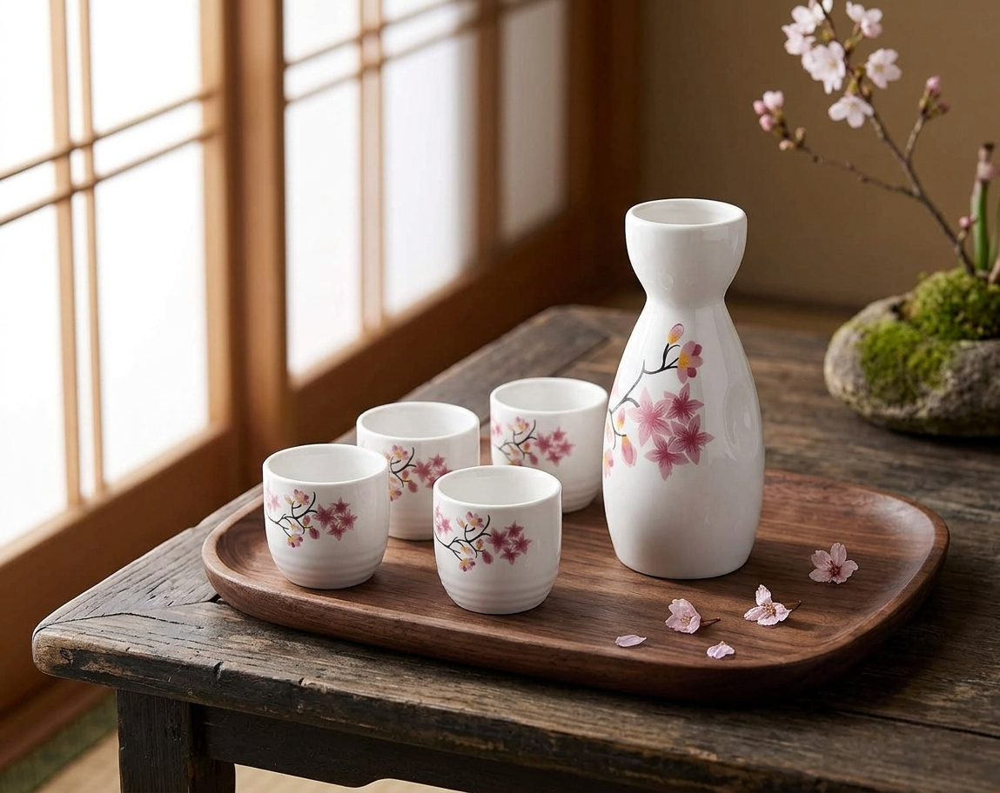

A ceramic tokkuri and four ochoko cups with a soft spring blossom design, made for warm evenings and shared moments.

In Japan, sake is traditionally poured for others. A tokkuri and small cups make that moment feel special.
The delicate pink blossoms give the set a seasonal, elegant look on any table.
One tokkuri and four ochoko cups make it easy to host or to gift.
Sake is often served in a small bottle and sipped from small cups so each pour can be shared and savored.
This set also works for tea, or simply as a piece of decor on a shelf or tray.
Serve sake or tea in a traditional way.
A tasteful gift for a home cook or host.
A pretty display for spring gatherings.
Ceramic sets are often used for warm sake. Check the product page for care and heating notes.
No, it also works for tea, soju, or as decor.
Alcohol is for adults of legal drinking age only.
A ceramic sake set with cherry blossom design - see current pricing and availability on Amazon. Please enjoy responsibly.
Check Price on Amazon →